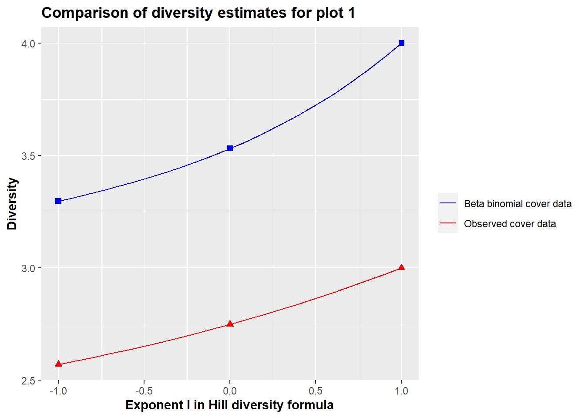

Last updated: 2021-05-16
Checks: 7 0
Knit directory: DataProject - commit docs/
This reproducible R Markdown analysis was created with workflowr (version 1.6.2). The Checks tab describes the reproducibility checks that were applied when the results were created. The Past versions tab lists the development history.
Great! Since the R Markdown file has been committed to the Git repository, you know the exact version of the code that produced these results.
Great job! The global environment was empty. Objects defined in the global environment can affect the analysis in your R Markdown file in unknown ways. For reproduciblity it’s best to always run the code in an empty environment.
The command set.seed(20210322) was run prior to running the code in the R Markdown file. Setting a seed ensures that any results that rely on randomness, e.g. subsampling or permutations, are reproducible.
Great job! Recording the operating system, R version, and package versions is critical for reproducibility.
Nice! There were no cached chunks for this analysis, so you can be confident that you successfully produced the results during this run.
Great job! Using relative paths to the files within your workflowr project makes it easier to run your code on other machines.
Great! You are using Git for version control. Tracking code development and connecting the code version to the results is critical for reproducibility.
The results in this page were generated with repository version bd74b25. See the Past versions tab to see a history of the changes made to the R Markdown and HTML files.
Note that you need to be careful to ensure that all relevant files for the analysis have been committed to Git prior to generating the results (you can use wflow_publish or wflow_git_commit). workflowr only checks the R Markdown file, but you know if there are other scripts or data files that it depends on. Below is the status of the Git repository when the results were generated:
Ignored files:
Ignored: .Rproj.user/
Untracked files:
Untracked: figure/Animation.Rmd/unnamed-chunk-11-1.gif
Note that any generated files, e.g. HTML, png, CSS, etc., are not included in this status report because it is ok for generated content to have uncommitted changes.
These are the previous versions of the repository in which changes were made to the R Markdown (analysis/Function_usage.Rmd) and HTML (docs/Function_usage.html) files. If you’ve configured a remote Git repository (see ?wflow_git_remote), click on the hyperlinks in the table below to view the files as they were in that past version.
| File | Version | Author | Date | Message |
|---|---|---|---|---|
| html | 82bea2a | GitHub | 2021-05-16 | Add files via upload |
| Rmd | ff0cd9f | GitHub | 2021-05-16 | Add files via upload |
| html | 891b43e | GitHub | 2021-05-10 | Add files via upload |
| html | 0e9dbb6 | GitHub | 2021-05-09 | Add files via upload |
| Rmd | a594d5a | MHPHP | 2021-05-09 | add |
| html | 2435554 | GitHub | 2021-04-28 | Add files via upload |
| Rmd | 042e8d5 | GitHub | 2021-04-28 | Add files via upload |
| html | 1f7890b | GitHub | 2021-04-28 | Add files via upload |
| Rmd | 41e37ed | GitHub | 2021-04-28 | Add files via upload |
| html | 1012d73 | GitHub | 2021-04-28 | Add files via upload |
| Rmd | fcd0374 | GitHub | 2021-04-28 | Add files via upload |
| html | dae8962 | GitHub | 2021-04-19 | Add files via upload |
| Rmd | da6cf05 | GitHub | 2021-04-19 | Add files via upload |
| html | b12e7ee | GitHub | 2021-04-18 | Add files via upload |
| Rmd | df33abb | GitHub | 2021-04-18 | Add files via upload |
| Rmd | 6c0e88a | GitHub | 2021-04-15 | Add files via upload |
| html | 1bfbb02 | GitHub | 2021-04-14 | Add files via upload |
| html | f173714 | GitHub | 2021-04-14 | Add files via upload |
| html | 29e6e6f | MHPHP | 2021-04-14 | Added docs for functions |
| Rmd | 6df1c17 | MHPHP | 2021-04-14 | Added function usage |
| html | 6df1c17 | MHPHP | 2021-04-14 | Added function usage |
This page is intended to provide an overview of the functions that are used on the Examples page. The structure of the page is that each function is presented with a short description of the input arguments and the output. To each function there will be a link to a page that include a further detailed description of the function and where the code is also presented.
The reader can download all the functions following the link below. The link will take the reader to a new page. This page can be saved as a R file.
The presentation of each function will also contain a small example of how the function is applied. To to this, we again use a small constructed cover dataset and presence/absence dataset. We remind the reader that cover data describes how much of the surface area that would be covered by a specific species if it is projected down on the ground. In this example cover data will take the form of an integer value between 0 and 16, where 16 is full cover and 0 is no cover.
When referring to cover_data, the dataset looks like:
| Species 1 | Species 2 | Species 3 | Species 4 | Species 5 | Species 6 | Species 7 | Species 8 | Species 9 | |
|---|---|---|---|---|---|---|---|---|---|
| Plot 1 | 2 | 0 | 0 | 1 | 0 | 3 | 0 | 0 | 2 |
| Plot 2 | 0 | 0 | 0 | 0 | 0 | 0 | 0 | 0 | 0 |
| Plot 3 | 5 | 0 | 1 | 10 | 0 | 11 | 7 | 16 | 0 |
| Plot 4 | 0 | 2 | 1 | 9 | 3 | 0 | 4 | 9 | 1 |
| Plot 5 | 1 | 0 | 16 | 0 | 0 | 14 | 0 | 0 | 11 |
| Plot 6 | 0 | 1 | 0 | 0 | 0 | 1 | 1 | 0 | 0 |
| Plot 7 | 16 | 10 | 2 | 7 | 0 | 13 | 0 | 9 | 5 |
When referring to presence_absence_data, the dataset looks like:
| Species 1 | Species 2 | Species 3 | Species 4 | Species 5 | Species 6 | Species 7 | Species 8 | Species 9 | |
|---|---|---|---|---|---|---|---|---|---|
| Plot 1 | 1 | 1 | 0 | 1 | 0 | 1 | 1 | 0 | 1 |
| Plot 2 | 0 | 1 | 0 | 0 | 0 | 0 | 0 | 0 | 0 |
| Plot 3 | 1 | 0 | 1 | 1 | 0 | 1 | 1 | 1 | 0 |
| Plot 4 | 0 | 1 | 1 | 1 | 1 | 0 | 1 | 1 | 1 |
| Plot 5 | 1 | 0 | 1 | 0 | 0 | 1 | 0 | 0 | 1 |
| Plot 6 | 0 | 1 | 0 | 0 | 0 | 1 | 1 | 0 | 0 |
| Plot 7 | 1 | 1 | 1 | 1 | 1 | 1 | 0 | 1 | 1 |
For each function we will use the above data to give an example of the usage of the function.
Main function of this vignette. The function is an implementation of the method outlined on the home page.
Usage:
beta_binomial_cover_update(cover_data, presence_absence_data, n = 16 , remove_column = 0)
Arguments:
Output
For further specifications of the function click link
Calculated example
res1 <- beta_binomial_cover_update(Cover, PresenceAbsence, n = 16 , remove_column = 0)The data from the outcome of the function looks like:
| Species 1 | Species 2 | Species 3 | Species 4 | Species 5 | Species 6 | Species 7 | Species 8 | Species 9 | |
|---|---|---|---|---|---|---|---|---|---|
| Plot 1 | 2.165401 | 0.2155853 | 0.000000 | 2.178135 | 0.000000 | 3.385214 | 0.6237624 | 0.000000 | 2.374 |
| Plot 2 | 0.000000 | 0.2155853 | 0.000000 | 0.000000 | 0.000000 | 0.000000 | 0.0000000 | 0.000000 | 0.000 |
| Plot 3 | 5.041350 | 0.0000000 | 1.087547 | 9.334098 | 0.000000 | 10.814527 | 6.1683168 | 15.093525 | 0.000 |
| Plot 4 | 0.000000 | 2.0497504 | 1.087547 | 8.538991 | 2.472973 | 0.000000 | 3.7920792 | 9.453237 | 1.510 |
| Plot 5 | 1.206751 | 0.0000000 | 15.759245 | 0.000000 | 0.000000 | 13.600519 | 0.0000000 | 0.000000 | 10.150 |
| Plot 6 | 0.000000 | 1.1326678 | 0.000000 | 0.000000 | 0.000000 | 1.527886 | 1.4158416 | 0.000000 | 0.000 |
| Plot 7 | 15.586498 | 9.3864112 | 2.065660 | 6.948777 | 0.527027 | 12.671855 | 0.0000000 | 9.453237 | 4.966 |
A more detailed description of the implementation of the model can be found at: detailed description. This page also includes the full code of the function.
The functions below implement the different diversity estimates defined at the Diversity page. The code implementations of the functions can be found at implementation
Usage:
shannon(cover_data, remove_column = NULL)
Arguments:
Cover_data: Data frame with plots as rows and species as columns. Each cell in the data frame contains cover data for a given specie in a given plot.
remove_column: An integer. In case the first columns in the cover_data contain data not about the species but rather information on the plots, these columns have to be removed. If remove_column is left empty it is assumed that all columns contain cover_data on species.
Output:
Calculated example
res2 <- shannon(Cover, remove_column = 0)| Shannon index | |
|---|---|
| Plot 1 | 1.320888 |
| Plot 2 | 0.000000 |
| Plot 3 | 1.603369 |
| Plot 4 | 1.650835 |
| Plot 5 | 1.173739 |
| Plot 6 | 1.098612 |
| Plot 7 | 1.811627 |
Usage:
simpson(cover_data, remove_column = NULL)
Arguments:
Cover_data: Data frame with plots as rows and species as columns. Each cell in the data frame contains cover data for a given specie in a given plot.
remove_column: An integer. In case the first columns in the cover_data contain data not about the species but rather information on the plots, these columns have to be removed. If remove_column is left empty it is assumed that all columns contain cover_data on species.
Output:
Calculated example
res3 <- simpson(Cover, remove_column = 0)| Simpson’s index | |
|---|---|
| Plot 1 | 0.2812500 |
| Plot 2 | 0.0000000 |
| Plot 3 | 0.2208000 |
| Plot 4 | 0.2294887 |
| Plot 5 | 0.3253968 |
| Plot 6 | 0.3333333 |
| Plot 7 | 0.1779396 |
Usage:
species_richness(presence_absence_data, remove_column = NULL)
Arguments:
presence_absence_data: Data frame with plots as rows and species as columns. Each cell in the data frame contains a 1 if the specie is present in the plot or a 0 if the specie is absent in the plot.
remove_column: An integer. In case the first columns in the presence_absence_data contain data not about the species but rather information on the plots, these columns have to be removed. If remove_column is left empty it is assumed that all columns contain cover_data on species.
Output:
Calculated example
res4 <- species_richness(PresenceAbsence, remove_column = 0)| Species richness | |
|---|---|
| Plot 1 | 6 |
| Plot 2 | 1 |
| Plot 3 | 6 |
| Plot 4 | 7 |
| Plot 5 | 4 |
| Plot 6 | 3 |
| Plot 7 | 8 |
Usage:
hill_shannon(cover_data, remove_column = NULL)
Arguments:
Cover_data: Data frame with plots as rows and species as columns. Each cell in the data frame contains cover data for a given specie in a given plot.
remove_column: An integer. In case the first columns in the cover_data contain data not about the species but rather information on the plots, these columns have to be removed. If remove_column is left empty it is assumed that all columns contain cover_data on species.
Output:
Calculated example
res5 <- hill_shannon(Cover, remove_column = 0)| Hill Shannon diversity | |
|---|---|
| Plot 1 | 3.746748 |
| Plot 2 | 1.000000 |
| Plot 3 | 4.969749 |
| Plot 4 | 5.211332 |
| Plot 5 | 3.234063 |
| Plot 6 | 3.000000 |
| Plot 7 | 6.120394 |
Usage:
hill_simpson(cover_data, remove_column = NULL)
Arguments:
Cover_data: Data frame with plots as rows and species as columns. Each cell in the data frame contains cover data for a given specie in a given plot.
remove_column: An integer. In case the first columns in the cover_data contain data not about the species but rather information on the plots, these columns have to be removed. If remove_column is left empty it is assumed that all columns contain cover_data on species.
Output:
Calculated example
res6 <- hill_simpson(Cover, remove_column = 0)| Hill Simpson diversity | |
|---|---|
| Plot 1 | 3.555556 |
| Plot 2 | Inf |
| Plot 3 | 4.528986 |
| Plot 4 | 4.357513 |
| Plot 5 | 3.073171 |
| Plot 6 | 3.000000 |
| Plot 7 | 5.619883 |
This function plots different diversity estimates of a plot against some information of interest about the plot.
Usage:
plot_diversity(data, diversities, plot_info, description = NULL)
Arguments:
Output:
Further documentation and code implementation at link
Calculated example
We will here use the data:
| pH | Hill_simpson | Species_richness | Hill_shannon | |
|---|---|---|---|---|
| Plot 1 | 4.0 | 3.555556 | 8 | 3.746748 |
| Plot 2 | 3.0 | Inf | 0 | 1.000000 |
| Plot 3 | 7.0 | 4.528986 | 50 | 4.969749 |
| Plot 4 | 4.0 | 4.357513 | 29 | 5.211332 |
| Plot 5 | 5.0 | 3.073171 | 42 | 3.234063 |
| Plot 6 | 3.5 | 3.000000 | 3 | 3.000000 |
| Plot 7 | 8.0 | 5.619883 | 62 | 6.120394 |
plot_diversity(Cover2, c("Hill_simpson", "Species_richness", "Hill_shannon"), "pH", "The pH value of the soil for each plot")This function takes in two data frames with cover data, one with the observed cover data, and one with the beta binomial updated cover data. Its output is a plot that shows different hill diversities as a function of the exponent \(l\) in:
\[ \text{Hill diversity = }\left( \sum_{i=1}^{S} p_i (r_i)^{l}\right)^{1/l} \]
Usage:
Diversity_profile_comparison(data_observed, data_new, plot, remove_column = NULL)
Arguments:
data_observed: Data frame with plots as rows and species as columns. Each cell in the data frame contains cover data for a given specie in a given plot.
data_new: Data frame with plots as rows and species as columns. Each cell in the data frame contains the beta binomial updated data for a given specie in a given plot.
plot: An integer. Which plot should be used in the comparison, ie which row should the data be taken from.
remove_column: An integer. In case the first columns in the data_observed and data_new contain data not about the species but rather information on the plots, these columns have to be removed. If remove_column is left empty it is assumed that all columns contain data on species.
Output:
Calculated example
In the example will we use the function beta_binomial_cover_update to get the updated cover data.
beta_binomial_cover_updated_data <- beta_binomial_cover_update(Cover, PresenceAbsence, n = 16 , remove_column = 0)different_diversities(Cover, beta_binomial_cover_updated_data, plot = 1, remove_column = 3)
sessionInfo()R version 4.0.3 (2020-10-10)
Platform: x86_64-w64-mingw32/x64 (64-bit)
Running under: Windows 10 x64 (build 19042)
Matrix products: default
locale:
[1] LC_COLLATE=English_United Kingdom.1252
[2] LC_CTYPE=English_United Kingdom.1252
[3] LC_MONETARY=English_United Kingdom.1252
[4] LC_NUMERIC=C
[5] LC_TIME=English_United Kingdom.1252
attached base packages:
[1] stats graphics grDevices utils datasets methods base
other attached packages:
[1] fitdistrplus_1.1-3 survival_3.2-7 MASS_7.3-53 downloadthis_0.2.1
[5] kableExtra_1.3.4 forcats_0.5.0 stringr_1.4.0 dplyr_1.0.2
[9] purrr_0.3.4 readr_1.4.0 tidyr_1.1.2 tibble_3.0.4
[13] ggplot2_3.3.2 tidyverse_1.3.0 workflowr_1.6.2
loaded via a namespace (and not attached):
[1] httr_1.4.2 jsonlite_1.7.1 viridisLite_0.3.0 splines_4.0.3
[5] modelr_0.1.8 assertthat_0.2.1 highr_0.8 blob_1.2.1
[9] cellranger_1.1.0 yaml_2.2.1 pillar_1.4.6 backports_1.1.10
[13] lattice_0.20-41 glue_1.4.2 digest_0.6.25 promises_1.1.1
[17] rvest_0.3.6 colorspace_1.4-1 htmltools_0.5.0 httpuv_1.5.5
[21] Matrix_1.2-18 pkgconfig_2.0.3 broom_0.7.2 haven_2.3.1
[25] scales_1.1.1 webshot_0.5.2 svglite_2.0.0 whisker_0.4
[29] later_1.1.0.1 git2r_0.28.0 mgcv_1.8-33 farver_2.0.3
[33] generics_0.0.2 ellipsis_0.3.1 withr_2.3.0 cli_2.1.0
[37] magrittr_1.5 crayon_1.3.4 readxl_1.3.1 evaluate_0.14
[41] ps_1.4.0 fs_1.5.0 fansi_0.4.1 nlme_3.1-149
[45] xml2_1.3.2 tools_4.0.3 hms_0.5.3 lifecycle_0.2.0
[49] munsell_0.5.0 reprex_0.3.0 compiler_4.0.3 systemfonts_1.0.1
[53] rlang_0.4.8 grid_4.0.3 rstudioapi_0.11 labeling_0.4.2
[57] rmarkdown_2.4 gtable_0.3.0 DBI_1.1.0 R6_2.4.1
[61] lubridate_1.7.9 knitr_1.30 bsplus_0.1.2 rprojroot_1.3-2
[65] stringi_1.5.3 Rcpp_1.0.5 vctrs_0.3.4 dbplyr_1.4.4
[69] tidyselect_1.1.0 xfun_0.18